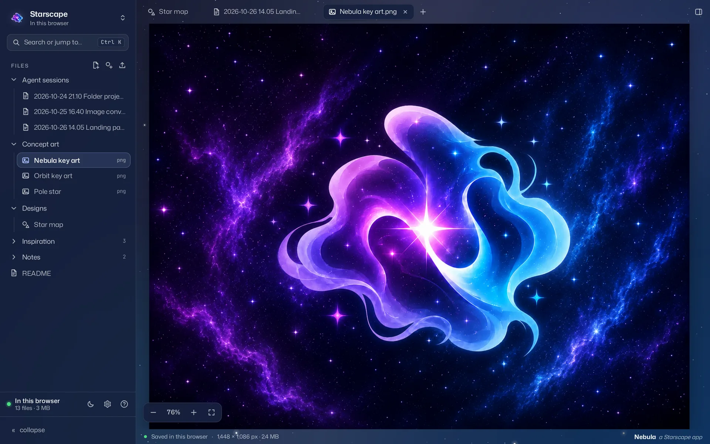
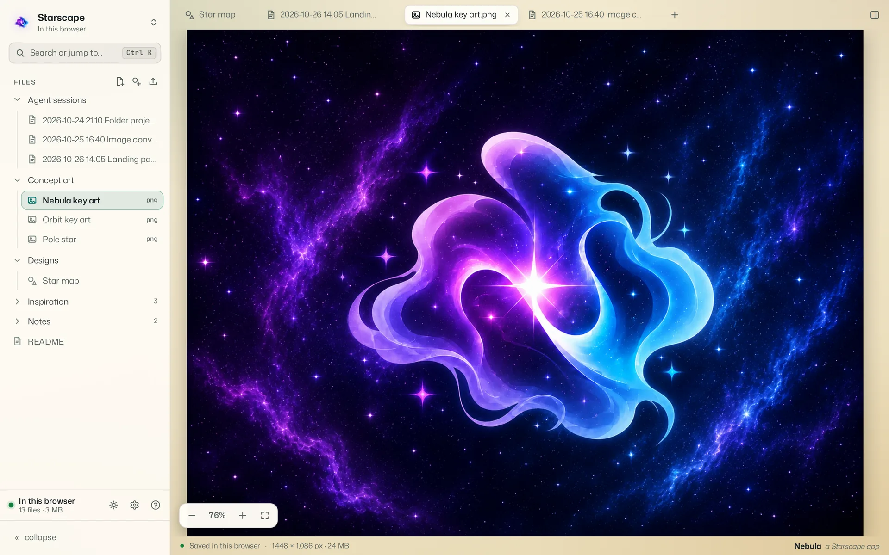
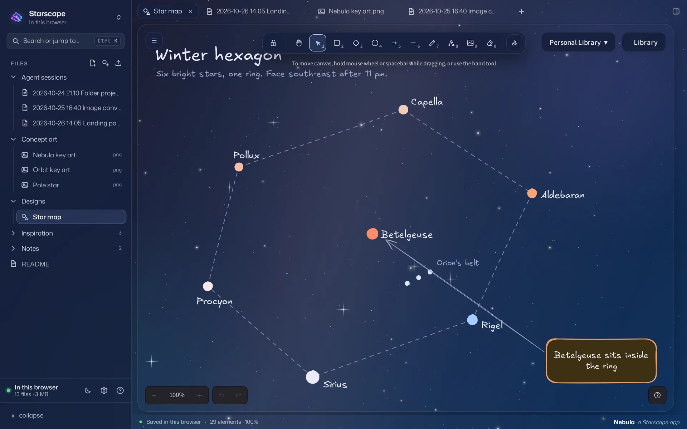
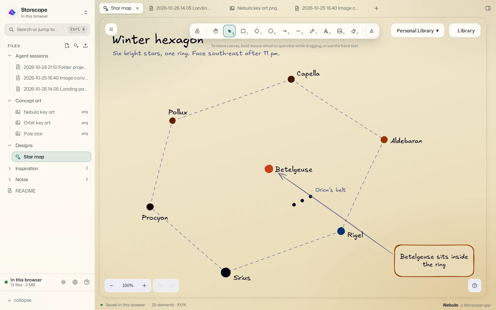
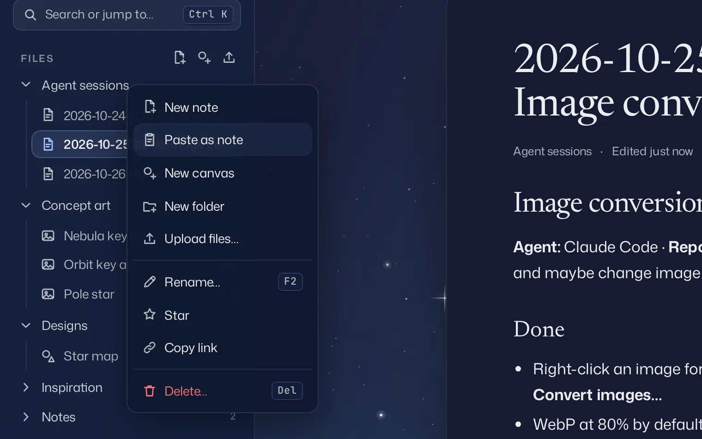
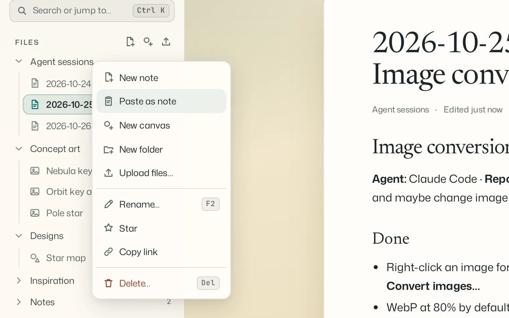
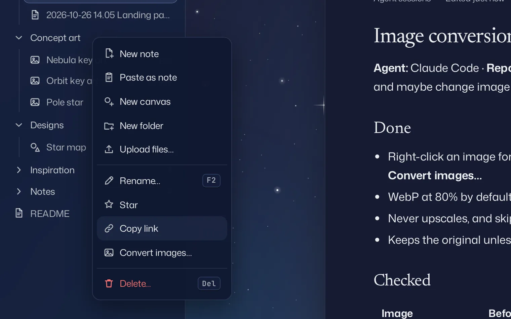
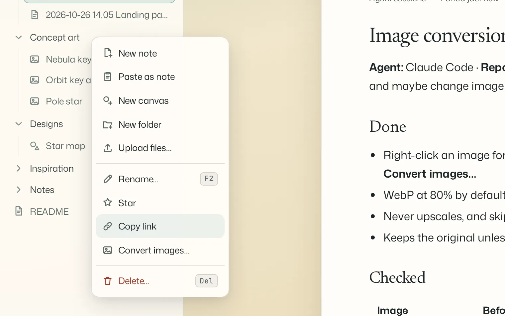

In your browser
Kept by your browser for this site, on computers and phones alike. Install Nebula as an app and browsers hold on to it for longer.
Free in your browser · open source
Notes, concept art, Excalidraw canvases, PDFs and your agents’ sessions, kept together as real files. No account, and your files stay on your device.


Every kind of file
Each file opens in its own tab, in a view made for it. Arrange your folders as you like, star the ones you use most, and jump to anything by name with Ctrl K.


Agent sessions, kept
Copy a reply from Claude Code, Codex or any chat, right-click a folder and choose Paste as note. Nebula saves it as Markdown, named for the moment you pasted it, beside the work it’s about: your own record, apart from the agent’s.
2026-10-26 14.05 Landing page plan.md
A reply that opens with a heading lends it to the name.


Works with Orbit
Right-click any file or folder and choose Copy link. Put it on an Orbit card, or in a note, and one click opens Nebula right on it, in a new tab.
Orbit holds what you’re doing. Nebula holds what you know.
A link opens where its project lives: in that browser, on that computer.


Private, and open source
Nothing is uploaded and there’s no account. Keep a project in your browser, or in a folder on your computer,
and download any project as a .zip whenever you like.
Kept by your browser for this site, on computers and phones alike. Install Nebula as an app and browsers hold on to it for longer.
Saved straight into the folder, where your other apps see the files too. Chrome, Edge and Opera on desktop.
Nebula is free software under the GNU AGPL-3.0, made by Starscape. Read the source